Arrange over-plotted points with a circle-packing algorithm and dodge groups side-to-side
position_circlepackdodge.RdThis function dodges groups and arranges the over-plotted points (of various sizes) using algorithms from the 'packcirles' package. The algorithms are applied per group.
Examples
library(ggplot2)
dat <- data.frame(
X = c(rep(0, 200)),
Y = rep(0, 200),
size = runif(200, 0, 1),
id = (rep(c("A", "B"), 100))
)
ggplot(dat, aes(x = X, y = Y, size = size, color = id)) +
geom_point(position = position_circlepackdodge(width = 1, density = 1, aspect_ratio = 1),
alpha = 0.25) +
coord_equal(xlim = c(-1, 1), ylim = c(-1, 1), expand = TRUE) +
scale_size_continuous(range = c(1, 3)) +
theme(legend.position = "none")
